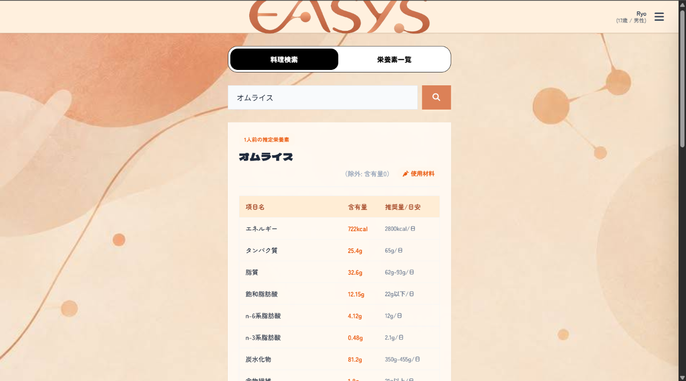

HTML / CSS
Webページの構造とデザインを学習中。
LEARNINGPROGRAMMING PORTFOLIO 2026
おもしろそうなことに挑戦して、好きなことを好きなように。
プログラミングで考えたことを形にする。
ゲームやアプリなど、制作した作品を紹介します。
01 — ABOUT
興味を持ったことを、
自分の手で作ってみる。
学校でプログラミングを学びながら、少しずつ制作に挑戦しています。まだ勉強中のことも多いですが、分からないことを調べ、試して、改善していく過程を大切にしています。
※ここは自分の言葉に合わせて書き換えてください。
Programming / AI / Games
IT分野で活躍できる力を身につける
Learn → Build → Improve
02 — SKILLS
できることを正確に伝えるため、経験の段階も分けて紹介します。
Webページの構造とデザインを学習中。
LEARNINGWebページに動きや操作を加える技術。
LEARNING基本文法や簡単なプログラムを学習。
BASICSコードの管理と作品公開に活用。
LEARNING※実際の経験に合わせて、技術名やレベルを変更してください。
03 — SELECTED WORKS

EASYS / 001↗毎日の食事と栄養を管理するアプリ。
Pythonで作るペット育成ゲーム。
これから挑戦するプログラミング作品。
掲載内容や公開リンクは、準備ができ次第更新します。